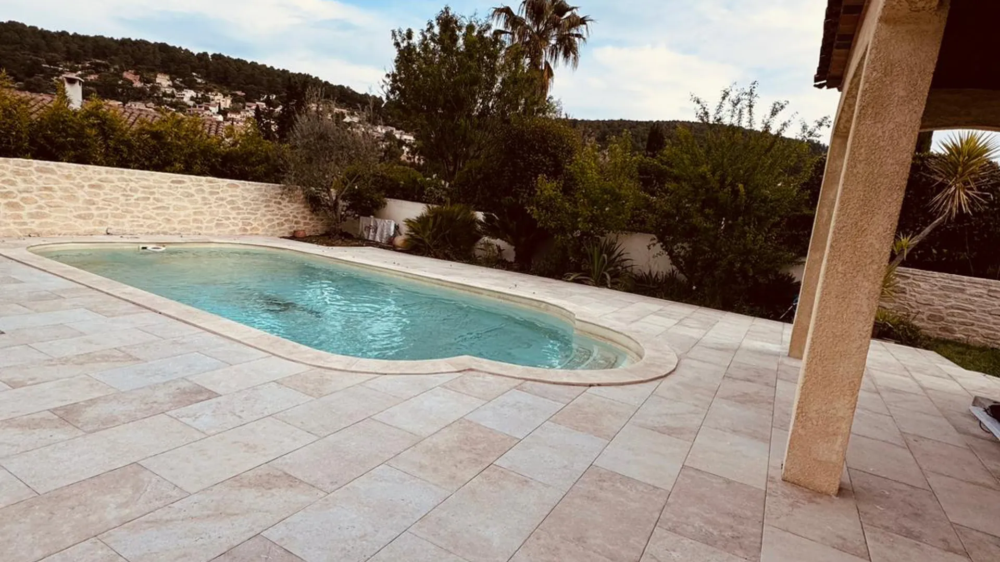

Constantin Construction Lucas et ses équipes
Maçon à Marseille et alentours
Terrasses, clôtures, murets et gros travaux de maçonnerie, réalisés par une équipe ponctuelle et sérieuse.
4,8 ★ Google · 6 avis« Très contente des travaux effectués sur ma terrasse. »
Laurence L. · avis Google
« Lucas est consciencieux, ponctuel, arrangeant… »
Adrien C. · avis Google
« L'équipe de Lucas est investie, sérieuse et disponible. »
Xavier M. · avis Google
« Très pro, travail de qualité. »
LoKayak Cassis · avis Google
« Travail sérieux, responsable des travaux sympa et professionnel. »
Serge P. · avis Google
Lun – ven 8h – 17h30 · Sam 9h – 16h
- 4,8 sur Google, 6 avis
- Ponctuelsà l'heure, du début à la fin
- Équipes efficacespetits et gros chantiers
- Devis gratuitvisite et conseils sur place
- Marseilleet communes alentour
Ce que nous construisons, rénovons et réparons.
Du muret de jardin aux gros travaux de fond, nous prenons en charge la maçonnerie de votre maison, à l'intérieur comme à l'extérieur.
-
01
Terrasses
Terrasses dallées, en pierre ou en béton, plages de piscine : des extérieurs solides et faciles à vivre, faits pour le soleil de Marseille.
Demander un devis -
02
Clôtures & murets
Murets de jardin, murets sur rue, piliers de portail, reprises de clôture : des limites nettes et durables autour de votre maison.
Demander un devis -
03
Gros travaux & rénovation
Les chantiers de fond, ceux qui demandent une vraie équipe : reprise de structure, murs, terrassement, remise en état complète.
Demander un devis -
04
Maçonnerie générale
Escaliers, allées, ouvertures, petites réparations : tous les travaux de maçonnerie du quotidien, faits proprement.
Demander un devis -
05
Dalles béton
Dalles de terrasse, de garage ou d'abri, chapes : une base saine, bien plane, prête pour la suite des travaux.
Demander un devis -
06
Murs & murs de soutènement
Sur les terrains en pente des collines marseillaises, un mur de soutènement bien fondé retient la terre et vous fait gagner de la place.
Demander un devis -
07
Extensions
Une pièce en plus, une véranda maçonnée, un agrandissement : construit dans le style de votre maison, des fondations jusqu'au toit.
Demander un devis -
08
Rénovation intérieure & extérieure
Ouverture de mur, reprise d'enduits, façades, sols : nous remettons votre maison à neuf, dedans comme dehors.
Demander un devis
Avant, après.
Faites glisser le curseur pour voir la transformation.
Un terrain nu devenu une terrasse en pierre, face aux collines.
Nos réalisations
Quelques chantiers récents à Marseille et alentours.
Ponctuels, efficaces, à l'écoute.
Ce sont les mots qui reviennent dans les avis de nos clients. Pour nous, un bon chantier, c'est d'abord une équipe sur qui l'on peut compter.
Super travail ! Lucas est consciencieux, ponctuel, arrangeant, ses équipes sont très efficaces et font un super boulot !
Très contente des travaux effectués sur ma terrasse. Entreprise sérieuse et à l'écoute, ponctuelle.
L'équipe de Lucas est investie, sérieuse et disponible. De gros travaux de fond réalisés chez moi.
Votre chantier en 4 étapes
Une façon de travailler simple, du premier appel à la fin des travaux.
- 1
Visite et conseils
Je viens voir votre projet sur place, je vous écoute et je vous conseille sur la meilleure solution.
- 2
Un devis clair
Vous recevez un devis gratuit et détaillé, poste par poste, sans engagement.
- 3
Une équipe efficace
Nos équipes arrivent à l'heure et avancent vite. Vous savez toujours où en sont les travaux.
- 4
Le point ensemble
À la fin, nous faisons le tour du chantier avec vous, pour que tout soit comme prévu.
« Je viens voir chaque projet moi-même, et je reste votre interlocuteur jusqu'à la fin du chantier. »
Pourquoi nous confier vos travaux
Je m'appelle Lucas. Avec mes équipes, nous réalisons vos travaux de maçonnerie à Marseille et alentours, du muret de jardin aux gros travaux de rénovation. Ce que nos clients disent de nous tient en cinq points.
Ponctuels
Nous arrivons à l'heure, du premier rendez-vous à la fin du chantier.
consciencieux, ponctuel, arrangeant
Adrien C.Des équipes efficaces
Des équipes qui avancent, sur les petits travaux comme sur les gros chantiers.
ses équipes sont très efficaces
Adrien C.À l'écoute
Nous prenons le temps de comprendre votre projet avant de vous proposer une solution.
Entreprise sérieuse et à l'écoute
Laurence L.Investis et disponibles
Vous savez toujours qui appeler, et nous vous répondons.
investie, sérieuse et disponible
Xavier M.Un travail de qualité
Des terrasses aux gros travaux de fond, un travail solide et bien fini.
Très pro, travail de qualité
LoKayak Cassis
Super travail ! Lucas est consciencieux, ponctuel, arrangeant, ses équipes sont très efficaces et font un super boulot ! Je recommande vivement.
Adrien C.
Très contente des travaux effectués sur ma terrasse. Entreprise sérieuse et à l'écoute, ponctuelle. Je recommande.
Laurence L.
L'équipe de Lucas est investie, sérieuse et disponible. De gros travaux de fond réalisés chez moi.
Xavier M.
Travail sérieux, responsable des travaux sympa et professionnel.
Serge P.
Très pro, travail de qualité. On recommande.
LoKayak Cassis
Pour moi c'était un petit travail de maçonnerie sur une clôture, en tout cas travail rapide.
Gérald B.
À Marseille et alentours
Nous sommes installés dans le 12e arrondissement de Marseille et nous intervenons dans toute la ville et les communes voisines. Votre commune n'est pas dans la liste ? Appelez-nous, on en parle.
- Marseille
- Allauch
- Plan-de-Cuques
- Aubagne
- Cassis
- La Ciotat
- Aix-en-Provence
Carte © contributeurs OpenStreetMap
Demandez votre devis gratuit
Décrivez-nous votre projet en quelques lignes, ajoutez des photos si vous en avez : je vous rappelle pour en parler et fixer une visite.
- 06 24 26 24 54
- Lun – ven 8h – 17h30
Samedi 9h – 16h - 52 avenue des Cigalons
13012 Marseille
Devis gratuit et sans engagement
Merci, votre demande est bien envoyée.
Je vous rappelle rapidement pour parler de votre projet et fixer une visite.
Lucas · 06 24 26 24 54